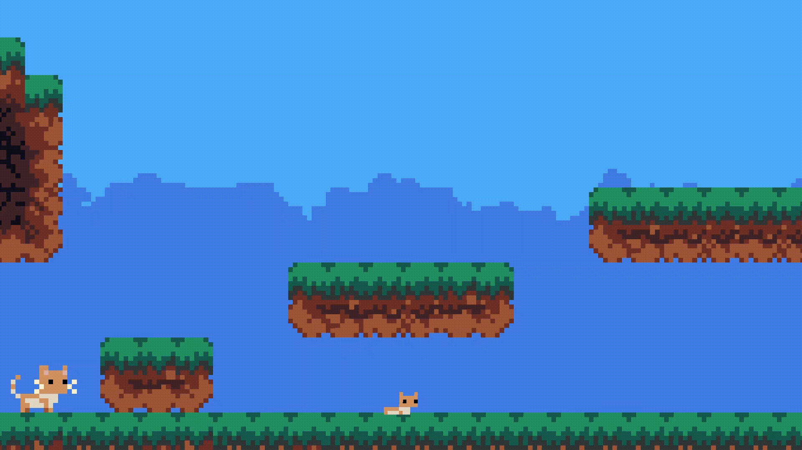

Projects
Kitty's Redemption

Tribals kidnapped your kittens! Avoid being caught and save your
kind!
A game made in 3 days for Mini Jam 207: Primal
placed 15º between 61 entries
Made music and SFX on the following genres/styles:
Tribal | Nature
Bald High
Someone is Isekaied to another world, but... everyone is bald! The
source of this is somewhere in Bald High
Made music and SFX on the following genres/styles:
Jazz | Rock | Metal
Soon...
Rescores
Sonic post-credits
Rock | Epic
Katana Zero
Metal | Energetic
Tools
Reaper
DAW (Digital Audio Workstation)
Kontakt
Digital instruments
Synthesizer V Studio
Digital voices
FMOD
Dynamic audio
Instruments
Winds
Sax | Trumpet | Trombone | Flute | Fluegelhorn | Tuba | Cimbasso |
Clarinet | Alphorn | Dialos |
Flogera | Kavali | Mantoura | Ney | Pan Flute | Pastoral Flute
Percussions
Cymbals | Kick | Snare | Toms | Antique Cymbals | Bendir | Clay Pot
| Copperphone | Fruit Shells | Sleigh Bells
| Square Drum | Tambourine | Water Pumpkins
Strings
Electic Guitar | Bass | Guitar | Violin | Cello | Kithara | Lyra |
Pandoura | Phorminx | Samvyke |
Syntonon | Triangle | Varvitos
Keyboards
Piano | Music box
Synths
Surge XT